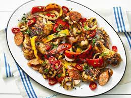

| Sample Image |
Name |
Description |
|  |
Grilled Chicken Scarpariello |
Traditional chicken scarpariello (which translates to shoemaker’s chicken)
is a braised dish made with chicken, sausage and pickled peppers, plus a sweet-and-sour pan sauce.
We used a vinegary marinade to mimic that signature tart flavor, then we grilled everything. |
| |
Sicilian Pasta |
Pasta produced in Sicily is a food made from semolina or flour of different extractions,
which is then divided into small shapes (Sicilian busiate) to be cooked in hot water and salt. |
 |
Focaccia |
his flatbread is one of the most iconic Italian breads. It's baked flat on a sheet pan, and it gets its
rich flavor from the addition of olive oil. Simple focaccia tastes great as-is for a snack,
and it's an excellent bread to serve with soup. |
| |
Aperol Spritz |
Aperol is one of the classics in Italian bitter liqueur, often described as the less alcoholic little brother of Campari.
It’s made of an infusion of herbs and roots, including orange and rhubarb. Despite dating back to 1919 and
long being a favoured Italian aperitif. |
| |
Tiramisù |
Among the most popular and appreciated desserts all over Italy, and the rest of the world, it has a unique and characteristic name:
tiramisù. The symbol of Italian pastry, with origins from Veneto, is a delicious restorative made of egg yolk,
sugar, and coffee, and with possible aphrodisiac qualities. |